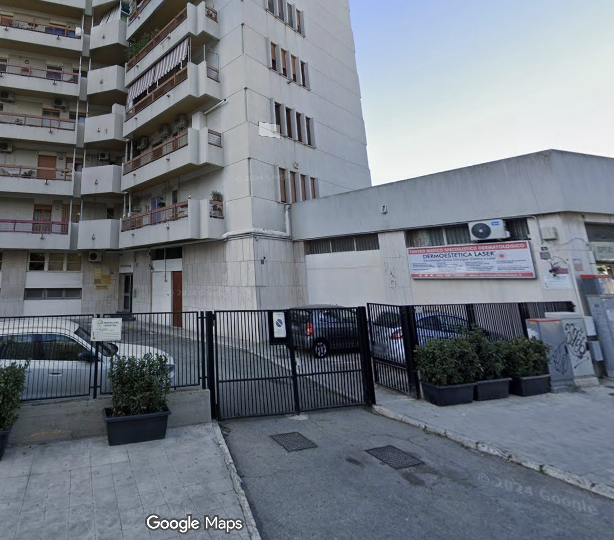
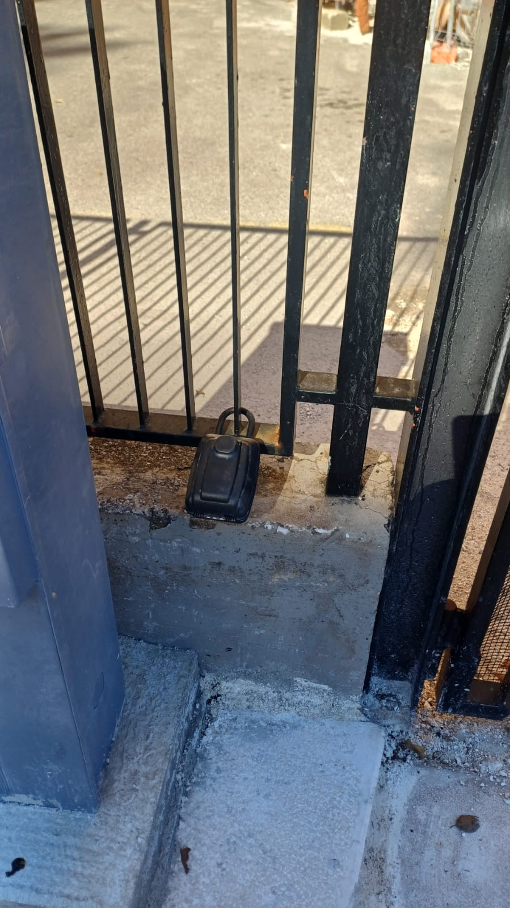
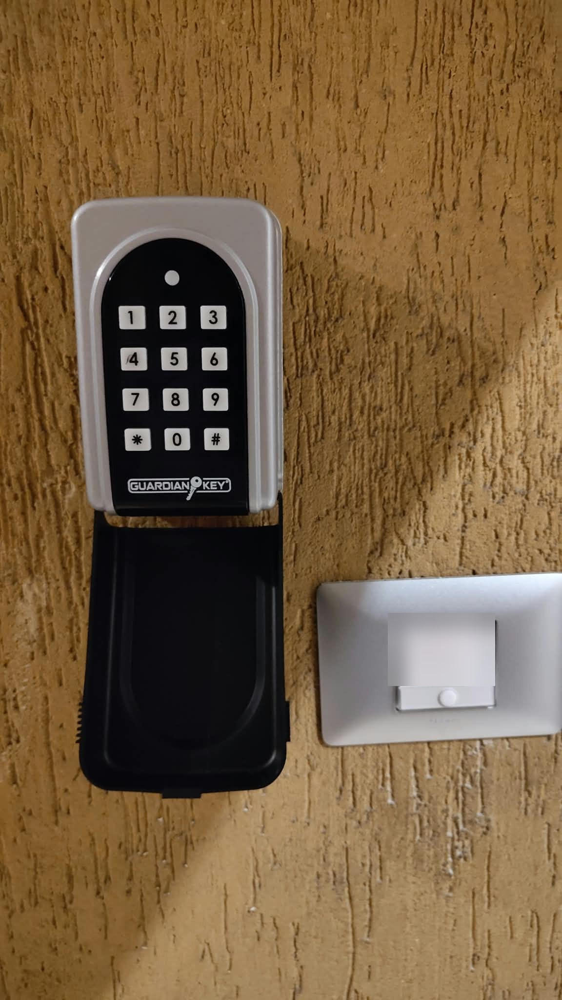

Benvenuti alla Casa del Cuore! Siamo felici di ospitarvi nel cuore di Taranto. Qui sotto trovate tutto ciò che serve per arrivare e entrare in casa in autonomia.
- Appartamento Terzo piano, interno A
- Dove Taranto
- Parcheggio Nessun parcheggio privato
1
Arrivo
L'appartamento si trova a Taranto — apri la posizione in Google Maps.

🚫
La casa non dispone di un parcheggio privato.
Potete parcheggiare nelle strade vicine, rispettando la segnaletica.
2
Il portone
Il condominio ha un portone sulla strada. Di giorno, tranne la domenica, il portone è aperto e sorvegliato da un portiere: entrate pure e passate direttamente al passo successivo.
🔑
Il locker esterno vi serve solo se il portone è
chiuso: di sera, di notte e la domenica.

3
L'appartamento
Salite al terzo piano e cercate l'interno A.
Accanto alla porta trovate il locker interno.

Avete bisogno di aiuto?
Siamo a vostra disposizione su WhatsApp.